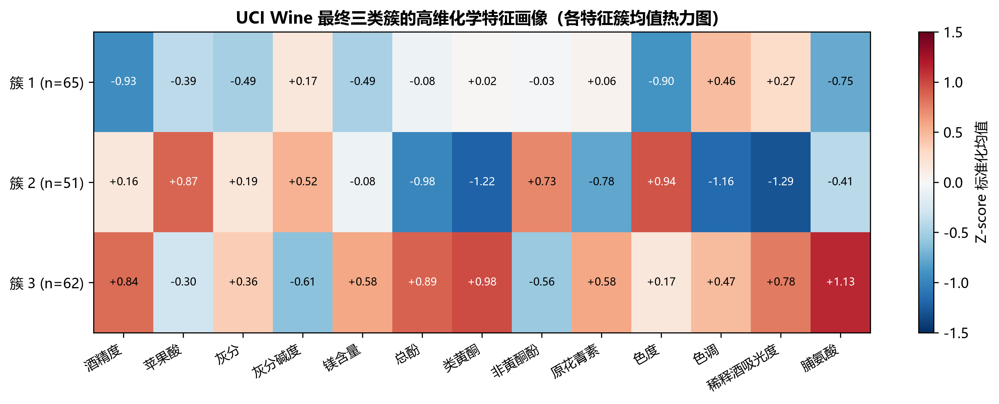
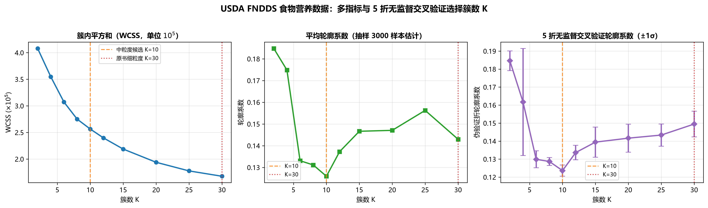
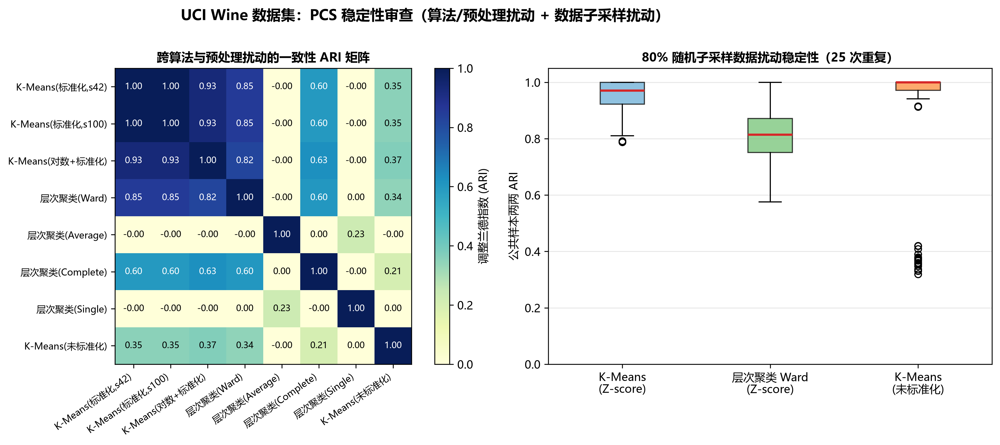
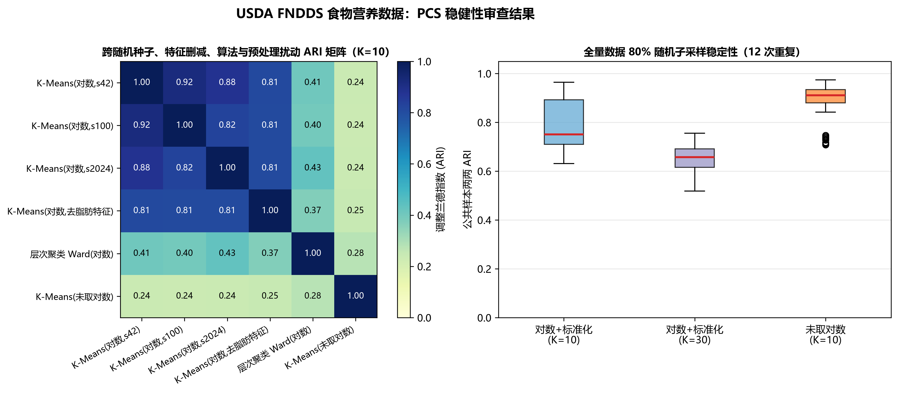
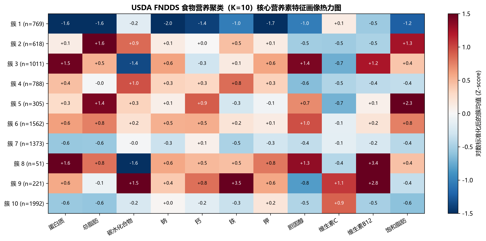

聚类分析（Clustering）
数学原理、评估体系与 PCS 稳健性框架
基于 Bin Yu & Rebecca L. Barter《Veridical Data Science》第 7 章，
系统阐述无监督聚类的优化建模、高维表征、模型选择与扰动稳定性验证
聚类分析的数学定义与无监督学习的核心挑战
给定观测样本集 X = {x1, x2, …, xn} ⊂ ℝd，在缺乏真实类别标签的条件下，寻找一个 K 划分 𝒞 = {C1, …, CK}，满足：
使得簇内样本高度同质，同时簇间样本显著异质。
由于不存在先验的 Ground Truth，无法像监督学习那样直接计算泛化误差或分类准确率，聚类质量的度量高度依赖几何假设。
聚类结果对数据预处理（标准化、非线性变换）、距离度量、算法范式及随机初始化等人为判断选择（Judgment Calls）高度敏感。
簇数 K 未知；常见内部目标函数（如 WCSS）随 K 单调递减，易陷入过拟合或主观经验决策。
可信聚类的四维准则与 PCS 数据科学框架
Tightness：同簇观测样本在特征空间内高度聚集。
Distinctness：不同簇之间存在可辨识的几何间隔。
Predictability：簇结构在外部或留出样本上可重现。
Stability：对合理的数据与建模扰动保持鲁棒。
以样本外泛化表现检验聚类结构是否反映真实信号。在无监督聚类中，通过伪验证集投影与交叉验证实现。
综合考量时间复杂度、内存开销与收敛代价，在统计性质与工程可扩展性之间进行显式权衡。
将传统抽样不确定性扩展至数据科学全生命周期：系统性扰动数据、预处理与算法选择，检验结论一致性。
距离度量空间、尺度敏感性与方差稳定变换
- 欧氏距离（p = 2）：旋转不变，K-Means 默认度量；平方项放大极端偏差。
- 曼哈顿距离（p = 1）：对离群值更具鲁棒性，适用于高维稀疏特征。
- 相关性 / 余弦距离：关注特征向量方向而非绝对幅值，适用于基因表达谱或文本向量。
- 非尺度不变性（Scale Sensitivity）：若第 m 维特征尺度放大 c 倍，其在欧氏平方距离中的权重将放大 c2 倍。因此量纲不统一时必须实施 Z-score 标准化：zim = (xim − μm) / σm。
- 长尾偏态敏感性（Skewness Sensitivity）：对于正值重尾分布，仅做线性标准化仍无法压缩极端右尾，平方误差目标函数会被少数离群样本主导，导致其余样本发生非平衡坍缩。
- 对数变换：x' = log10(x + 1) 可有效压缩数量级跨度、稳定方差并降低偏度。
凝聚式层次聚类：树状图结构与四种 Linkage 数学定义
- 初始化：将每个样本视为独立单点簇，共 n 个簇，计算两两距离矩阵 D ∈ ℝn×n。
- 迭代合并：选取当前簇间距离 D(A, B) 最小的两个簇 A, B 合并为 A ∪ B，并更新距离矩阵。
- 终止与切分：重复合并直至形成单一根簇，得到嵌套层次树（Dendrogram）；按目标高度水平截断即可获得任意簇数 K。
- 无需预指定 K：一次运行完整呈现多尺度嵌套结构。
- 贪心不可逆性：早期合并决策无法在后续步骤回溯修正。
- 计算复杂度：空间 O(n2)，时间 O(n2 log n) ~ O(n3)，受限于样本规模 n。
| Linkage 准则 | 簇间距离数学定义 D(A, B) | 几何特性与理论优缺点 |
|---|---|---|
| Single（单连接） | minx∈A, y∈B d(x, y) | 可连接非凸细长结构，但极易产生链式效应（Chaining） |
| Complete（全连接） | maxx∈A, y∈B d(x, y) | 倾向生成直径受控的紧凑球形簇，但对边缘离群点敏感 |
| Average（平均连接） | (|A||B|)−1 Σx∈A Σy∈B d(x, y) | 单连接与全连接的折中，对局部噪声具有一定缓冲作用 |
| Ward（离差平方和） | ΔWCSS(A, B) = [|A||B| / (|A|+|B|)] ‖μA − μB‖22 | 最小化合并导致的簇内总方差增量，通常产生最均衡、紧凑的划分 |
K-Means 的优化形式、收敛性证明与几何性质
- 初始化：选取 K 个初始质心 {μk(0)}；K-Means++ 按 P(x) ∝ D(x)2 概率采样，降低落入劣质局部最优的风险。
- 分配步（固定 μ 优化 𝒞）：
Ck(t) = { xi : ‖xi − μk(t)‖22 ≤ ‖xi − μj(t)‖22, ∀ j } - 更新步（固定 𝒞 优化 μ）：由一阶条件 ∂J/∂μk = 0 得最优中心为簇均值 μk(t+1) = |Ck(t)|−1 Σxi∈Ck(t) xi。
- 终止：直至划分不再变化。
- 单调收敛定理：分配步与更新步均使目标函数 J 单调不增，且有限样本集的划分总数有限（不超过第二类 Stirling 数），故算法必在有限步内收敛。
- 非凸性与局部最优：联合优化问题为 NP-hard，收敛解依赖初始化；实践中需多起点重复（如
n_init=20）取最小目标值解。 - Voronoi 几何假设：决策边界为质心间的线性中垂超平面（Voronoi 剖分），隐含各簇近似凸球形、等方差假设。
- 计算复杂度：O(n K d t)，随样本量 n 线性扩展，显著优于层次聚类。
实证检验 ①：尺度变换、对数变换与 Linkage 敏感性


[58, 56, 64]，与 K-Means 的一致性 ARI = 0.853；Complete 法 ARI = 0.596；而 Single 与 Average 法均因局部离群点诱发链式效应，退化为 [174, 3, 1]（ARI ≈ 0）。
高维空间中的聚类可视化与语义解释方法
按欧氏距离选取最接近各簇质心 μk 的代表观测，或分层随机抽样，借助领域先验检验簇内语义一致性。
对各特征维度绘制跨簇箱线图、核密度曲线或标准化均值热力图，量化各变量对簇间分离的贡献度。
通过主成分分析将 ℝd 投影至前两个正交主方向；需注意投影存在信息损失：低维可分必高维可分，反之不必然。


内部质量度量：方差分解（WCSS）与轮廓系数理论
Σi ‖xi − μ‖2 = Σk Σi∈Ck ‖xi − μk‖2 + Σk |Ck| ‖μk − μ‖2
- 最小化 WCSS 等价于最大化簇间平方和 BCSS。
- 单调性缺陷：随着 K 增大，WCSS 严格非增（当 K=n 时 WCSS=0），因此不能直接以最小化 WCSS 作为选 K 准则。
记 a(i) 为样本 i 到同簇其他样本的平均距离，b(i) 为到最近其他簇的平均距离：
- s(i) → +1 表明紧密且分离良好；s(i) ≈ 0 位于边界；s(i) < 0 可能存在错分。
- 理论限制：依赖所处度量空间，不可跨不同预处理变换直接比较（如未标准化 Wine 轮廓系数 0.571 高于标准化后的 0.285，系单变量拉伸所致）。
聚类划分的相似度比较：Rand Index 与调整兰德指数（ARI）
设 U、V 为同一数据集上的两种聚类划分，考察全部 N = n(n−1)/2 对无序样本 (xi, xj)：
| 样本对状态 | 在 V 中同簇 | 在 V 中异簇 |
|---|---|---|
| 在 U 中同簇 | a（一致） | c（不一致） |
| 在 U 中异簇 | d（不一致） | b（一致） |
在独立随机划分假设（广义超几何分布）下，由于 b 通常很大，普通 RI 期望显著大于 0；ARI 扣除随机期望后，随机划分期望为 0，完全一致为 1，且对簇标签置换保持不变。
无监督学习中的模型选择：V 折交叉验证（Predictability）
- 将样本集 X 随机划分为 V 个互不相交的子集（折）X1, …, XV。
- 对每个候选簇数 K ∈ 𝒦，遍历每一折 v = 1, …, V：
- 在训练折 X−v 上拟合聚类算法，获得 K 个簇中心 {μ1(−v), …, μK(−v)}；
- 将伪验证折 Xv 中的样本按最近质心规则分配标签：ç(x) = argmink ‖x − μk(−v)‖2；
- 在伪验证折 Xv 上计算验证得分 Sv(K)（如平均轮廓系数或平均平方距离）。
- 计算跨折均值与标准差，结合领域粒度确定最终 K。
- 抑制样本内过拟合：传统肘部法则与全样本轮廓系数仅评估训练拟合度；无监督 CV 检验簇结构在未见样本上的外推一致性。
- 量化波动区间：跨 V 折标准差可反映不同 K 下模型表现的方差水平。
- 统计与领域协同：在多尺度连续分布的真实高维数据中，统计曲线用于排除不合理区间，最终 K 需兼顾下游科学/决策粒度。
实证检验 ②：低维分离结构与高维复杂结构的选 K 对比


聚类结果的系统性扰动设计与稳定性评估理论
PCS 框架要求在交付最终聚类结论前，对建模链路中的四类不确定性来源进行显式扰动测试，并以 ARI 矩阵与扰动分布区间进行定量汇报：
| 扰动类别 | 具体扰动操作 | 量化评估方法 | 科学诊断含义 |
|---|---|---|---|
| 1. 数据扰动 | Bootstrap 重采样 / 80% 无放回子采样（重复 B 次） | 计算两两子采样公共样本集的 ARI 分布 | 检验簇结构对有限抽样变异的鲁棒性 |
| 2. 预处理与特征扰动 | 原始尺度 vs 标准化 vs 对数变换；剔除高相关或关键特征 | 不同预处理划分间的两两 ARI 与簇大小分布 | 识别高敏感度建模判断，验证特征冗余鲁棒性 |
| 3. 算法与初始化扰动 | 更换随机种子；跨算法对照（K-Means vs 层次 Ward/Average） | 跨算法/跨初始化 ARI 热力图 | 区分真实数据结构与特定算法的几何偏置 |
| 4. 外部/样本外扰动 | 留出验证集投影或独立外部数据集映射 | 伪验证折轮廓系数 / 预测强度 | 验证簇结构的样本外可预测性（P） |
实证检验 ③：跨扰动 ARI 矩阵与子采样稳定性分析


实证检验 ④：USDA 食物营养数据的最终聚类与原型解释

| 簇 | 样本量 | 近质心原型样本 | 对应营养学类别 |
|---|---|---|---|
| 簇 8 | 51 | Mackerel; Barracuda | 海鲜鱼类（高 B12、零碳水） |
| 簇 9 | 221 | Cheerios; Frosted oat cereal | 强化早餐谷物（高铁高碳水） |
| 簇 10 | 1,992 | Broccoli; Peas | 绿叶与豆类蔬菜（高纤维维 C） |
| 簇 3 | 1,011 | Fried turkey; Salami | 高蛋白肉类制品（高蛋白高胆固醇） |
| 簇 4 | 788 | Oat bran muffin; Oatmeal bread | 全谷物燕麦烘焙主食 |
| 簇 1 | 769 | Applesauce; Pear nectar | 果泥与含糖果饮（高水高糖低脂） |
| 簇 2 | 618 | Iced cake; Peanut butter cookie | 高脂高糖烘焙甜点 |
| 簇 5 | 305 | Grilled cheese; Ham croissant | 乳脂/奶酪三明治（高饱和脂肪高钙） |
超越第 7 章：四大主流聚类范式的数学机制与适用边界
| 聚类范式 | 代表算法 | 核心数学机制 | 几何假设与复杂度 | 典型数模应用场景 |
|---|---|---|---|---|
| 划分式 | K-Means / K-Medoids | 最小化簇内平方和（或 L1 中心距离），交替优化求解 | 凸球形、近似等方差；O(nKdt) | 大规模客户分群、特征压缩、指标分层 |
| 层次式 | Agglomerative (Ward) | 基于 Linkage 准则自底向上构建超度量树状图 | 无需先定 K；O(n2 log n) | 中小规模多尺度分类、基因/区域谱系分析 |
| 基于密度 | DBSCAN / HDBSCAN | 基于 ε-邻域密度可达性定义核心点、边界点与噪声点 | 任意非凸形状、自动识别离群噪声；O(n log n) | 地理空间聚类、应急选址分区、异常清洗 |
| 基于概率模型 | 高斯混合模型（GMM） | 假定 p(x) = Σk πk 𝒩(x | μk, Σk)，EM 算法极大似然估计 | 椭球形协方差、软概率归属；可用 BIC/AIC 选 K | 混合行为画像、多状态统计建模 |
基于 PCS 框架的规范化聚类建模工作流
- 检验特征量纲跨度、偏态分布与离群值，显式论证标准化与非线性变换（如对数变换）的合理性。
- 记录所有预处理判断选择，严禁跨不同度量空间直接比较内部几何指标。
- 依据数据几何假设与样本规模（C）匹配算法范式（K-Means / Ward / DBSCAN / GMM）。
- 联合使用 WCSS、轮廓系数、无监督 V 折交叉验证（P）与领域粒度确定簇数 K。
- 系统实施数据子采样、特征/预处理扰动与跨算法对比，以 ARI 矩阵定量汇报稳定性（S）。
- 核查簇规模分布，排除由非平衡坍缩引发的伪稳定现象。
- 综合原型样本、特征边际画像与低维投影给出清晰的领域解释。
- 固定随机种子并公开完整清洗与建模代码，确保分析过程透明可复现。
感谢聆听，敬请各位老师与同学指正
将无监督聚类从单一算法调用，提升为具备可预测性、可计算性与扰动稳健性的科学建模流程。
- Yu, B., & Barter, R. L. (2024). Veridical Data Science: The Practice of Responsible Data Analysis and Decision Making, Chapter 7. MIT Press. (https://vdsbook.com/)
- Yu, B., & Kumbier, K. (2020). Veridical data science. PNAS, 117(8), 3920–3929.
- Rousseeuw, P. J. (1987). Silhouettes: a graphical aid to the interpretation and validation of cluster analysis. JCAM, 20, 53–65.
- Hubert, L., & Arabie, P. (1985). Comparing partitions. Journal of Classification, 2(1), 193–218.
- Tibshirani, R., & Walther, G. (2005). Cluster validation by prediction strength. JCGS, 14(3), 511–528.
- GitHub 仓库：https://github.com/Alrediph/clustering
- 内容清单：UCI Wine 与 USDA FNDDS 全流程 Python 复现脚本、清洗数据缓存、实验分析报告及高清图表。